skall, aynı mekandaki insanları aynı masada buluşturan bir oyun uygulaması. Müşterileriniz mekanınızda check-in yapar, masa kurar ya da bir masaya katılır; aynı masada herkes kendi telefonundan oynar.
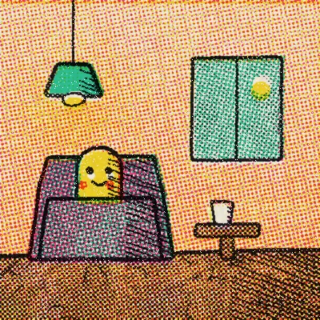
Kart, kutu ya da donanım gerekmez. Oyun ve sohbet herkesin kendi telefonunda.
Vampir Köylü, Signum, Kinshi, Krot, Sprengja, Kaupholl ve Kibrit. Anlatıcı da kart da telefonda.
Mekandaki açık masalara katılma isteği gönderilir; masa sahibi kabul ederse masaya oturulur.
Keşfet'te listelenir. Mekan sohbeti ve akışı yalnızca o an mekanınızda check-in yapmış olanlara açıktır.
Konum yalnızca check-in anında doğrulanır, saklanmaz. Uygunsuz davranışı şikayet etmek ve birini engellemek uygulamanın içinde.
Ekranlar uygulamanın kendisinden.
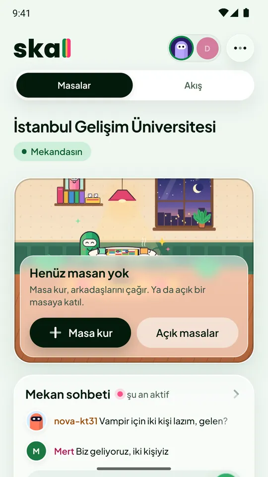
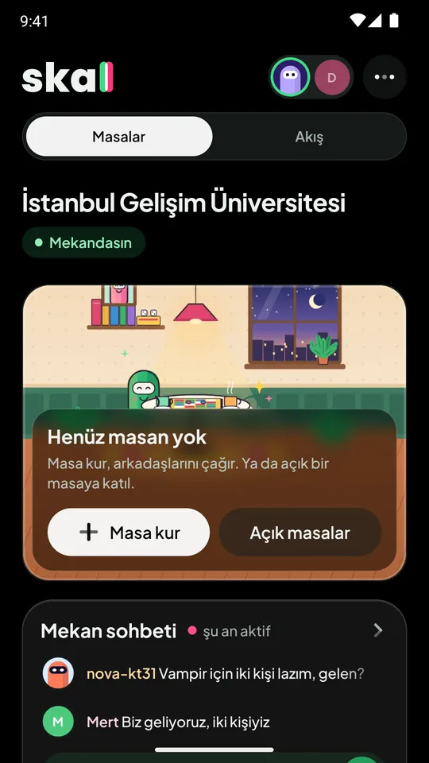
Müşteriniz mekanınızda uygulamayı açar, mekanınızı seçip check-in yapar. Konum yalnızca o an mekanda olduğunu doğrulamak için alınır ve saklanmaz. Check-in yapınca mekandaki masaları ve mekan sohbetini görür.
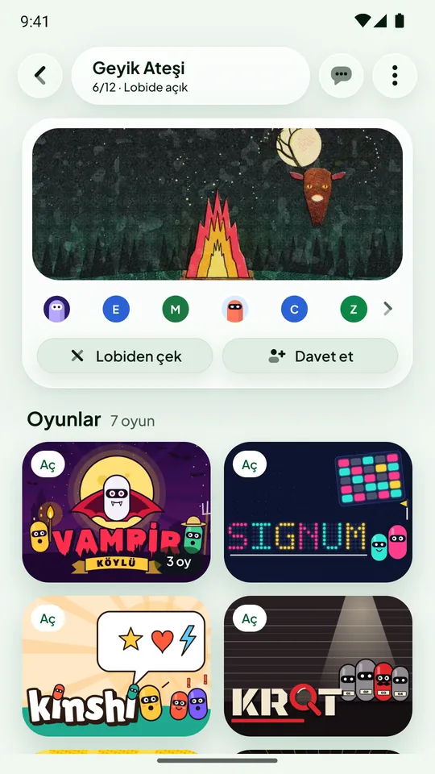
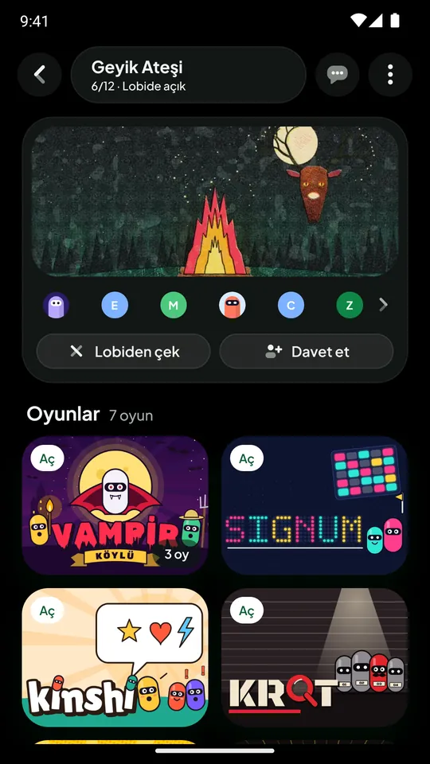
Kendi masasını kurar ya da bir masaya katılma isteği gönderir. Mekandaki arkadaşını masasına davet edebilir.
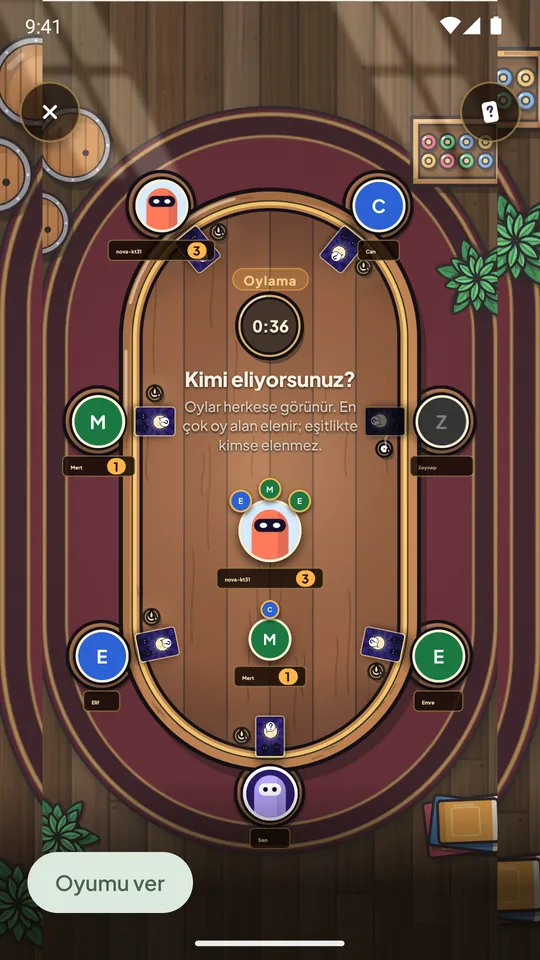
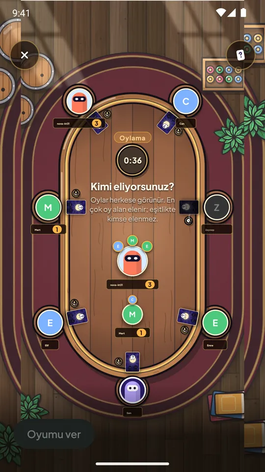
Masa sahibi oyunu başlatır. Aynı masada herkes kendi telefonundan oynar; roller, kartlar ve süre telefonda.
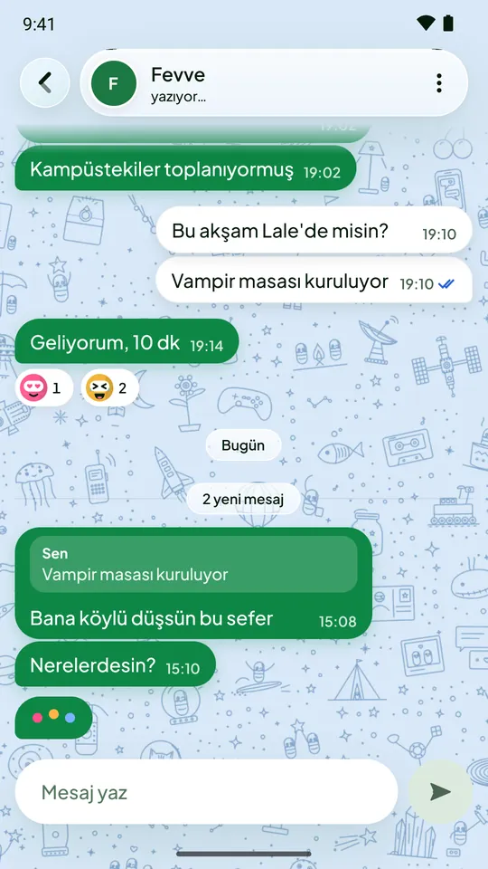
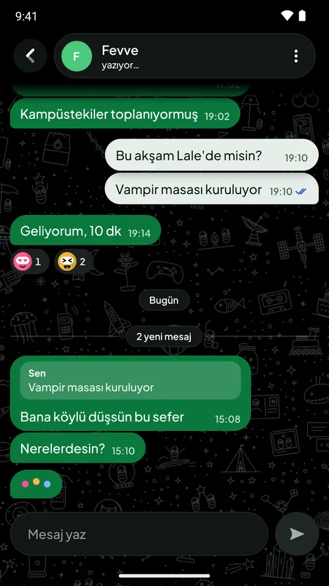
Masa bitince iki kişi de "Arkadaş ekle"ye basarsa arkadaş olurlar ve mesajlaşabilirler. Tek kişi basarsa hiçbir şey olmaz, kimse bilmez.
skall pilot aşamasında. Şu an kampüslerde ve semt sohbetinde aktif.
Kafe ve mekanlar henüz listede yok. İlk mekanları şimdi seçiyoruz.
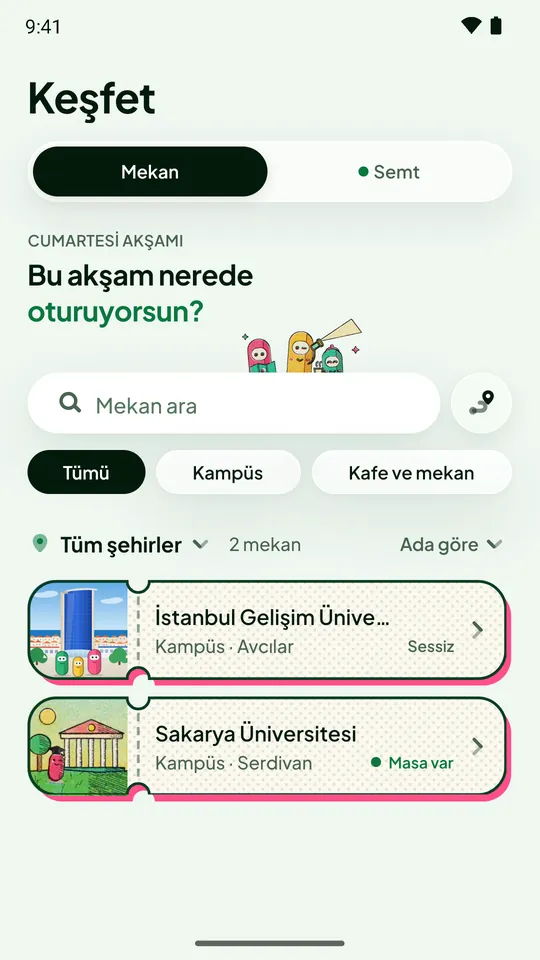
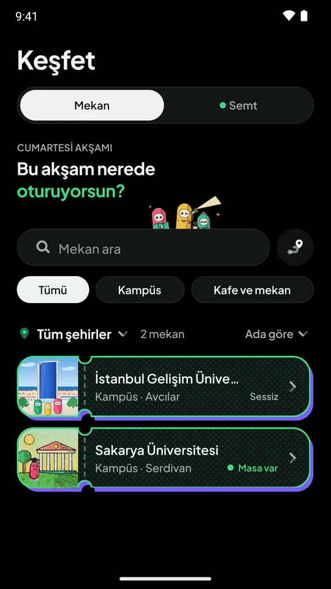
Bunlar uygulamada yok ve söz değil. Gelirse burada duyururuz.
Mekanınızda belirli bir akşamı oyun gecesi olarak duyurmak.
Mekanınızın Keşfet'te öne çıkması.
Pilot mekan olmak şu demek:
Mekanınız uygulamada listelenir; müşterileriniz onu Keşfet'te bulur.
Müşterileriniz mekanınızda check-in yapar, masa kurar ve masada oynar.
skall'daki ilk mekanlardan biri olursunuz.
Başvurunuzu aldıktan sonra sizinle iletişime geçeriz.